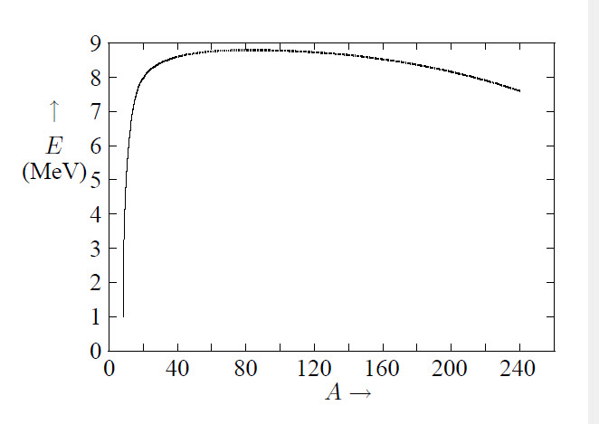

The mass of a nucleus is given by: \[M_{\rm nucl}=Zm_{\rm p}+Nm_{\rm n}-E_{\rm bind}/c^2\] The binding energy per nucleon is given in the figure at the right. The top is at \(^{56}_{26}\)Fe, the most stable nucleus. With the constants
\[ \begin{matrix}
a_{1} & = & 15.760 & MeV\\
a_{2} & = & 17.810 & MeV\\
a_{3} & = & 0.711 & MeV\\
a_{4} & = & 23.702 & MeV\\
a_{5} & = & 34.000 & MeV\\
\end{matrix} \]

and \(A=Z+N\), in the droplet or collective model of the nucleus the binding energy \(E_{\rm bind}\) is given by: \[\frac{E_{\rm bind}}{c^2}=a_1A-a_2A^{2/3}-a_3\frac{Z(Z-1)}{A^{1/3}}-a_4\frac{(N-Z)^2}{A}+\epsilon a_5A^{-3/4}\] These terms arise from:
The Yukawa potential can be derived if the nuclear force can to first approximation, be considered as an exchange of virtual pions:
\[U(r)=-\frac{W_0r_0}{r}\exp\left(-\frac{r}{r_0}\right)\]
With \(\Delta E\cdot\Delta t\approx\hbar\), \(E_\gamma=m_0c^2\) and \(r_0=c\Delta t\) follows: \(r_0=\hbar/m_0c\).
In the shell model of the nucleus one assumes that a nucleon moves in an average field of other nucleons. Further, there is a contribution of the spin-orbit coupling \(\sim\vec{L}\cdot\vec{S}\): \(\Delta V_{ls}=\frac{1}{2}(2l+1)\hbar\omega\). So each level \((n,l)\) is split in two, with \(j=l\pm\frac{1}{2}\), where the state with \(j=l+\frac{1}{2}\) has the lowest energy. This is just the opposite for electrons, which is an indication that the \(L-S\) interaction is not electromagnetical. The energy of a 3-dimensional harmonic oscillator is \(E=(N+\frac{3}{2})\hbar\omega\). \(N=n_x+n_y+n_z=2(n-1)+l\) where \(n\geq1\) is the main oscillator number. Because \(-l\leq m\leq l\) and \(m_s=\pm\frac{1}{2}\hbar\) there are \(2(2l+1)\) substates which exist independently for protons and neutrons. This gives rise to the so called magical numbers: nuclei where each state in the outermost level are filled are particulary stable. This is the case if \(N\) or \(Z\) \(\in\{2,8,20,28,50,82,126\}\).
A nucleus is to first approximation spherical with a radius of \(R=R_0A^{1/3}\). Here, \(R_0\approx1.4\cdot10^{-15}\) m, constant for all nuclei. If the nuclear radius is measured including the charge distribution one obtains \(R_0\approx1.2\cdot10^{-15}\) m. The shape of oscillating nuclei can be described by spherical harmonics:
\[R=R_0\left[1+\sum_{lm}a_{lm}Y_l^m(\theta,\varphi)\right]\]
\(l=0\) gives rise to monopole vibrations, density vibrations, which can be applied to the theory of neutron stars. \(l=1\) gives dipole vibrations, \(l=2\) quadrupole, with \(a_{2,0}=\beta\cos\gamma\) and \(a_{2,\pm2}=\frac{1}{2}\sqrt{2}\beta\sin\gamma\) where \(\beta\) is the deformation factor and \(\gamma\) the shape parameter. The multipole moment is given by \(\mu_l=Zer^lY_l^m(\theta,\varphi)\). The parity of the electric moment is \(\Pi_E=(-1)^l\), of the magnetic moment \(\Pi_M=(-1)^{l+1}\).
There are two contributions to the magnetic moment: \(\displaystyle\vec{M}_L=\frac{e}{2m_{\rm p}}\vec{L}\) and \(\displaystyle\vec{M}_S=g_S\frac{e}{2m_{\rm p}}\vec{S}\)
where \(g_S\) is the spin-gyromagnetic ratio. For protons \(g_S=5.5855\) and for neutrons \(g_S=-3.8263\). The \(z\)-components of the magnetic moment are given by \(M_{L,z}=\mu_{\rm N}m_l\) and \(M_{S,z}=g_S\mu_{\rm N}m_S\). The resulting magnetic moment is related to the nuclear spin \(I\) according to \(\vec{M}=g_I(e/2m_{\rm p})\vec{I}\). The \(z\)-component is then \(M_z=\mu_{\rm N}g_Im_I\).
The number of nuclei decaying is proportional to the number of nuclei: \(\dot{N}=-\lambda N\). This gives for the number of nuclei \(N\): \(N(t)=N_0\exp(-\lambda t)\). The half life time follows from \(\tau_{\frac{1}{2}}\lambda=\ln(2)\). The average life time of a nucleus is \(\tau=1/\lambda\). The probability that \(N\) nuclei decay within a time interval is given by a Poisson distribution:
\[P(N)dt=N_0\frac{\lambda^N{\rm e}^{-\lambda}}{N!}dt\]
If a nucleus can decay into more final states then: \(\lambda=\sum\lambda_i\). So the fraction decaying into state \(i\) is \(\lambda_i/\sum\lambda_i\). There are 5 types of natural radioactive decay:
If a beam with intensity \(I\) hits a target with density \(n\) and length \(x\) (Rutherford scattering) the number of scatterings \(R\) per unit of time is equal to \(R=Inx\sigma\). From this follows that the intensity of the beam decreases as \(-dI=In\sigma dx\). This results in \(I=I_0{\rm e}^{-n\sigma x}=I_0{\rm e}^{-\mu x}\).
Because \(dR=R(\theta,\varphi)d\Omega/4\pi=Inxd\sigma\) it follows: \(\displaystyle\frac{d\sigma}{d\Omega}=\frac{R(\theta,\varphi)}{4\pi nxI}\)
If \(N\) particles are scattered in a material with density \(n\) then: \(\displaystyle\frac{\Delta N}{N}=n\frac{d\sigma}{d\Omega}\Delta\Omega\Delta x\)
For Coulomb collisions: \(\displaystyle\left.\frac{d\sigma}{d\Omega}\right|_{\rm C}= \frac{Z_1Z_2e^2}{8\pi\varepsilon_0\mu v_0^2}\frac{1}{\sin^4(\frac{1}{2}\theta)}\)
The initial state is a beam of neutrons moving along the \(z\)-axis with wavefunction \(\psi_{\rm init}={\rm e}^{ikz}\) and current density \(J_{\rm init}=v|\psi_{\rm init}|^2=v\). At large distances from the scattering point they have approximately a spherical wavefunction \(\psi_{\rm scat}=f(\theta){\rm e}^{ikr}/r\) where \(f(\theta)\) is the scattering amplitude. The total wavefunction is then given by
\[\psi=\psi_{\in}+\psi_{\rm scat}={\rm e}^{ikz}+f(\theta)\frac{e^{ikr}}{r}\]
The particle flux of the scattered particles is \(v|\psi_{\rm scat}|^2=v|f(\theta)|^2 d\Omega\). From this it follows that \(\sigma(\theta)=|f(\theta)|^2\). The wavefunction of the incoming particles can be expressed as a sum of angular momentum wavefunctions:
\[\psi_{\rm init}={\rm e}^{ikz}=\sum_l\psi_l\]
The impact parameter is related to the angular momentum with \(L=bp=b\hbar k\), so \(bk\approx l\). At very low energy only particles with \(l=0\) are scattered, so
\[\psi=\psi_0'+\sum_{l>0}\psi_l~~\mbox{and}~~\psi_0=\frac{\sin(kr)}{kr}\]
If the potential is approximately rectangular then: \(\displaystyle\psi_0'=C\frac{\sin(kr+\delta_0)}{kr}\)
The cross section is then \(\displaystyle \sigma(\theta)=\frac{\sin^2(\delta_0)}{k^2}~~\mbox{so}~~ \sigma=\int\sigma(\theta)d\Omega=\frac{4\pi\sin^2(\delta_0)}{k^2}\)
At very low energies: \(\displaystyle\sin^2(\delta_0)=\frac{\hbar^2k^2/2m}{W_0+W}\)
with \(W_0\) the depth of the potential well. At higher energies: \(\displaystyle\sigma=\frac{4\pi}{k^2}\sum_l\sin^2(\delta_l)\)
If a particle \(P_1\) collides with a particle \(P_2\) which is in rest w.r.t. the laboratory system and other particles are created, so
\[P_1+P_2\rightarrow\sum_{k>2} P_k\]
the total energy \(Q\) gained or required is given by \(Q=(m_1+m_2-\sum\limits_{k>2}m_k)c^2\).
The minimal required kinetic energy \(T\) of \(P_1\) in the laboratory system to initialize the reaction is \[T=-Q\frac{m_1+m_2+\sum m_k}{2m_2}\] If \(Q<0\) there is a threshold energy.
Radiometric quantities determine the strength of the radiation source(s). Dosimetric quantities are related to the energy transfer from radiation to matter. Parameters describing a relation between those are called interaction parameters. The intensity of a beam of particles in matter decreases according to \(I(s)=I_0\exp(-\mu s)\). The deceleration of a heavy particle is described by the Bethe-Bloch equation:
\[\frac{dE}{ds}\sim\frac{q^2}{v^2}\]
The fluention is given by \(\Phi=dN/dA\). The flux is given by \(\phi=d\Phi/dt\). The energy loss is defined by \(\Psi=dW/dA\), and the energy flux density \(\psi=d\Psi/dt\). The absorption coefficient is given by \(\mu=(dN/N)/dx\). The mass absorption coefficient is given by \(\mu/\varrho\).
The radiation dose \(X\) is the amount of charge produced by the radiation per unit of mass, with unit C/kg. An old unit is the Röntgen: 1Ro\(=2.58\cdot10^{-4}\) C/kg. With the energy-absorption coefficient \(\mu_E\) follows: \[X=\frac{dQ}{dm}=\frac{e\mu_E}{W\varrho}\Psi\] where \(W\) is the energy required to disjoin an elementary charge.
The absorbed dose \(D\) is given by \(D=dE_{\rm abs}/dm\), with unit Gy=J/kg. An old unit is the rad: 1 rad=0.01 Gy. The dose tempo is defined as \(\dot{D}\). It can be derived that \[D=\frac{\mu_E}{\varrho}\Psi\] The Kerma \(K\) is the amount of kinetic energy of secundary produced particles which is produced per mass unit of the radiated object.
The equivalent dose \(H\) is a weight average of the absorbed dose per type of radiation, where for each type radiation the effects on biological material is used for the weight factor. These weight factors are called the quality factors. Their unit is Sv. \(H=QD\). If the absorption is not equally distributed also weight factors \(w\) per organ need to be used: \(H=\sum w_k H_k\). For some types of radiation holds:
| Radiation type | Q |
|---|---|
| Röntgen, gamma radiation | 1 |
| \(\beta\), electrons, mesons | 1 |
| Thermic neutrons | 3 to 5 |
| Fast neutrons | 10 to 20 |
| protons | 10 |
| \(\alpha\), fission products | 20 |